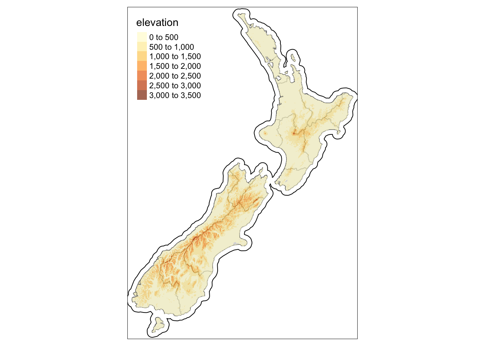

Thursday October 27, 2022
“To me programming is more than an important practical art. It is also a gigantic undertaking in the foundations of knowledge.” – Grace Hopper
Please remember to vote in the upcoming midterm elections!
Today
- Estimating the relative risk of events
- Estimating second-order properties of spatial events
- Examples of spatial clustered events
Estimating the relative risk of events
The relative risk of occurrence of some event is a conditional probability. In a non-spatial context, the risk of catching a disease if you are elderly relative to the risk if you are young.
Spatial intensity maps constructed from two different point pattern data provides a way to estimate the risk of one event conditional on the other event.
For example, given a tornado somewhere in Texas what is the chance that it will cause at least EF3 damage? With the historical set of all tornadoes marked by the damage rating you can make a map of all tornadoes and a map of the EF3+ tornadoes and then take the ratio.
To see this start by importing the tornado data, mutating and selecting the damage rating as a factor called EF before turning the resulting simple feature data frame into a planar point pattern.
Torn.sf <- sf::st_read(dsn = here::here("data", "1950-2020-torn-initpoint")) |>
sf::st_transform(crs = 3082) |>
dplyr::filter(mag >= 0) |>
dplyr::mutate(EF = as.factor(mag)) |>
dplyr::select(EF)## Reading layer `1950-2020-torn-initpoint' from data source
## `/Users/jameselsner/Desktop/ClassNotes/ASS-2022/data/1950-2020-torn-initpoint'
## using driver `ESRI Shapefile'
## Simple feature collection with 66244 features and 22 fields
## Geometry type: POINT
## Dimension: XY
## Bounding box: xmin: -163.53 ymin: 17.7212 xmax: -64.7151 ymax: 61.02
## Geodetic CRS: WGS 84library(spatstat)## Loading required package: spatstat.data## Loading required package: spatstat.geom## spatstat.geom 2.4-0## Loading required package: spatstat.random## spatstat.random 2.2-0## Loading required package: spatstat.core## Loading required package: nlme## Loading required package: rpart## spatstat.core 2.4-4## Loading required package: spatstat.linnet## spatstat.linnet 2.3-2##
## spatstat 2.3-4 (nickname: 'Watch this space')
## For an introduction to spatstat, type 'beginner'T.ppp <- Torn.sf |>
as.ppp()Next get the state boundary and transform the CRS to that of the tornadoes. Then create a owin object from it. Finally, subset the tornadoes by the window.
TX.sf <- USAboundaries::us_states(states = "Texas") |>
sf::st_transform(crs = sf::st_crs(Torn.sf))
W <- TX.sf |>
as.owin()
T.ppp <- T.ppp[W]
summary(T.ppp)## Marked planar point pattern: 8932 points
## Average intensity 1.293119e-08 points per square unit
##
## *Pattern contains duplicated points*
##
## Coordinates are given to 1 decimal place
## i.e. rounded to the nearest multiple of 0.1 units
##
## Multitype:
## frequency proportion intensity
## 0 4773 0.5343708000 6.910052e-09
## 1 2557 0.2862741000 3.701865e-09
## 2 1225 0.1371473000 1.773479e-09
## 3 323 0.0361621100 4.676192e-10
## 4 48 0.0053739360 6.949141e-11
## 5 6 0.0006717421 8.686426e-12
##
## Window: polygonal boundary
## single connected closed polygon with 550 vertices
## enclosing rectangle: [873763.8, 2116649.8] x [5881245, 7063086] units
## (1243000 x 1182000 units)
## Window area = 6.90733e+11 square units
## Fraction of frame area: 0.47You note the chance that a tornado anywhere in Texas will be at least EF3 or worse is the sum of the proportions for these types: .03616 + .00537 + .00067 = .042 (or 4.2%).
As noted last time there is a spatial intensity gradient across the state with fewer tornadoes in the southwest and more in the northeast. Also, the more damaging tornadoes might be more common relative to all tornadoes in some parts of the state compared to other parts of the state.
To create a map of the relative risk of the more damaging tornadoes you start by making two ppp objects, one being the set of all tornado events with damage ratings 0, 1, or 2 and the other the set of all tornado locations with damage ratings 3, 4, or 5. You do this by subset the object using brackets ([]) and the logical operator | (or) and then merge the two subsets assigning names H and I as marks with the superimpose() function.
H.ppp <- unmark(T.ppp[T.ppp$marks == 2 |
T.ppp$marks == 1 |
T.ppp$marks == 0])
I.ppp <- unmark(T.ppp[T.ppp$marks == 3 |
T.ppp$marks == 4 |
T.ppp$marks == 5])
T2.ppp <- superimpose(H = H.ppp,
I = I.ppp)## Warning: data contain duplicated pointsSee https://en.wikipedia.org/wiki/Enhanced_Fujita_scale for definitions of EF tornado rating.
The chance that a tornado chosen at random is intense (EF3+) is 4.2%. Plot the event locations for the set of intense tornadoes.
I.ppp |>
plot(pch = 25,
cols = "red",
main = "")
T.ppp |>
plot(add = TRUE,
lwd = .1)
To get the relative risk use the relrisk() function. If X is a multi-type point pattern with factor marks and two levels of the factor then the events of the first type (the first level of marks(X)) are treated as controls (conditionals) or non-events, and events of the second type are treated as cases.
The relrisk() function estimates the local chance of a case (i.e. the probability \(p(u)\) that a point at \(u\) will be a case) using a kernel density smoother. The bandwidth for the kernel is specified or can be found through an iterative cross-validation procedure (recall the bandwidth selection procedure used in geographic regression) using the bw.relrisk() function (Lesson 12).
The bandwidth has units of length (here meters). You specify a minimum and maximum bandwidth with the hmin = and hmax = arguments. This takes a few seconds.
( bw <- T2.ppp |>
bw.relrisk(hmin = 1000,
hmax = 200000) )## sigma
## 119770.4The optimal bandwidth (sigma) is 119770 meters or about 120 km.
Now estimate the relative risk at points defined by a 256 by 256 grid and using the 120 km bandwidth for the kernel smoother.
rr.im <- T2.ppp |>
relrisk(sigma = bw,
dimyx = c(256, 256))The result is an object of class im (image) with values you interpret as the conditional probability of an ‘intense’ tornado.
You retrieve the range of probabilities with the range() function. Note that many of the values are NA corresponding pixels that are outside the window so you set the na.rm argument to TRUE.
rr.im |>
range(na.rm = TRUE)## [1] 0.005003694 0.060170214The probabilities range from a low of .5% to a high of 6%. This range compares with the statewide average probability of 4.2%.
Map the probabilities with the plot() method.
rr.im |>
plot()
Improve the map by converting the image to a raster (SpatRaster), assigning the CRS, and then using functions from the {tmap} package.
rr.r <- rr.im |>
terra::rast()
terra::crs(rr.r) <- sf::st_crs(Torn.sf)$proj4string
tmap::tm_shape(rr.r) +
tmap::tm_raster()
The relative chance of a more damaging tornado peaks across the northeast part of the state.
Since the relative risk is computed for any point across the domain, it is interesting to extract these relative risks for cities and towns.
You get city locations with the us_cities() function from the {USAboundaries} package that extracts a simple feature data frame of cities. The CRS is 4326 and you filter to keep only cities with at least 100K residents in 2010.
( Cities.sf <- USAboundaries::us_cities(state = "TX") |>
sf::st_transform(crs = sf::st_crs(Torn.sf)) |>
dplyr::filter(population > 100000) )## City populations for contemporary data come from the 2010 census.## Simple feature collection with 29 features and 12 fields
## Geometry type: POINT
## Dimension: XY
## Bounding box: xmin: 893306.2 ymin: 5900924 xmax: 2063028 ymax: 6916010
## Projected CRS: NAD83 / Texas Centric Lambert Conformal
## # A tibble: 29 × 13
## city state…¹ state…² county count…³ stplf…⁴ name_…⁵ city_…⁶ popul…⁷ place…⁸
## * <chr> <chr> <chr> <chr> <chr> <chr> <chr> <chr> <chr> <chr>
## 1 Abile… Texas TX TAYLOR Taylor 4801000 Abilen… US Cen… US Cen… Incorp…
## 2 Amari… Texas TX multi… Multip… 4803000 Amaril… US Cen… US Cen… Incorp…
## 3 Arlin… Texas TX TARRA… Tarrant 4804000 Arling… US Cen… US Cen… Incorp…
## 4 Austin Texas TX TRAVIS Travis 4805000 Austin… US Cen… US Cen… Incorp…
## 5 Beaum… Texas TX JEFFE… Jeffer… 4807000 Beaumo… US Cen… US Cen… Incorp…
## 6 Brown… Texas TX CAMER… Cameron 4810768 Browns… US Cen… US Cen… Incorp…
## 7 Carro… Texas TX Dallas Dallas 4813024 Carrol… US Cen… US Cen… Incorp…
## 8 Corpu… Texas TX NUECES Nueces 4817000 Corpus… US Cen… US Cen… Incorp…
## 9 Dallas Texas TX DALLAS Dallas 4819000 Dallas… US Cen… US Cen… Incorp…
## 10 Denton Texas TX DENTON Denton 4819972 Denton… US Cen… US Cen… Incorp…
## # … with 19 more rows, 3 more variables: year <int>, population <int>,
## # geometry <POINT [m]>, and abbreviated variable names ¹state_name,
## # ²state_abbr, ³county_name, ⁴stplfips_2010, ⁵name_2010, ⁶city_source,
## # ⁷population_source, ⁸place_typeThe resulting simple feature data frame contains 29 rows (one row for each city with a population of at least 100K) and 13 columns. The geometry column is S3 simple feature column of type POINT as the center location.
Use the extract() function from the {terra} package to get a data frame containing the relative risk at each of the 29 cities.
( rr.v <- rr.r |>
terra::extract(Cities.sf) |>
dplyr::pull(lyr.1) )## [1] 0.040181777 0.038711058 0.053751495 0.042836129 0.043559229 0.021952615
## [7] 0.055164961 0.025910846 0.055613807 0.054530511 0.006268908 0.052901830
## [13] 0.055852968 0.056147124 0.054253968 0.040255552 0.054743220 0.047154604
## [19] 0.025026377 0.031264429 0.021623937 0.056305996 0.056243196 0.025423059
## [25] 0.040201363 0.055928375 0.036054024 0.051147204 0.053815148Attach these relative risk values to the Cities.sf object.
( Cities.sf <- Cities.sf |>
dplyr::mutate(rr = rr.v) |>
dplyr::arrange(desc(rr)) )## Simple feature collection with 29 features and 13 fields
## Geometry type: POINT
## Dimension: XY
## Bounding box: xmin: 893306.2 ymin: 5900924 xmax: 2063028 ymax: 6916010
## Projected CRS: NAD83 / Texas Centric Lambert Conformal
## # A tibble: 29 × 14
## city state…¹ state…² county count…³ stplf…⁴ name_…⁵ city_…⁶ popul…⁷ place…⁸
## <chr> <chr> <chr> <chr> <chr> <chr> <chr> <chr> <chr> <chr>
## 1 Mckin… Texas TX COLLIN Collin 4845744 McKinn… US Cen… US Cen… Incorp…
## 2 Mesqu… Texas TX Dallas Dallas 4847892 Mesqui… US Cen… US Cen… Incorp…
## 3 Garla… Texas TX Dallas Dallas 4829000 Garlan… US Cen… US Cen… Incorp…
## 4 Plano Texas TX Collin Collin 4858016 Plano … US Cen… US Cen… Incorp…
## 5 Frisco Texas TX Collin Collin 4827684 Frisco… US Cen… US Cen… Incorp…
## 6 Dallas Texas TX DALLAS Dallas 4819000 Dallas… US Cen… US Cen… Incorp…
## 7 Carro… Texas TX Dallas Dallas 4813024 Carrol… US Cen… US Cen… Incorp…
## 8 Irving Texas TX Dallas Dallas 4837000 Irving… US Cen… US Cen… Incorp…
## 9 Denton Texas TX DENTON Denton 4819972 Denton… US Cen… US Cen… Incorp…
## 10 Grand… Texas TX Dallas Dallas 4830464 Grand … US Cen… US Cen… Incorp…
## # … with 19 more rows, 4 more variables: year <int>, population <int>,
## # geometry <POINT [m]>, rr <dbl>, and abbreviated variable names ¹state_name,
## # ²state_abbr, ³county_name, ⁴stplfips_2010, ⁵name_2010, ⁶city_source,
## # ⁷population_source, ⁸place_typeTo illustrate the results create a graph using the geom_lollipop() function from the {ggalt} package. Use the package {scales} to allow for labels in percent.
library(ggalt)## Loading required package: ggplot2## Registered S3 methods overwritten by 'ggalt':
## method from
## grid.draw.absoluteGrob ggplot2
## grobHeight.absoluteGrob ggplot2
## grobWidth.absoluteGrob ggplot2
## grobX.absoluteGrob ggplot2
## grobY.absoluteGrob ggplot2library(scales)##
## Attaching package: 'scales'## The following object is masked from 'package:spatstat.geom':
##
## rescaleggplot(data = Cities.sf,
mapping = aes(x = reorder(city, rr), y = rr)) +
geom_lollipop(point.colour = "steelblue",
point.size = 3) +
scale_y_continuous(labels = percent,
limits = c(0, .0625)) +
coord_flip() +
labs(x = "",
y = NULL,
title = "Historical chance that a tornado caused at least EF3 damage",
subtitle = "Cities in Texas with a 2010 population > 100,000",
caption = "Data from SPC (1950-2020)") +
theme_minimal()
Another example: Florida wildfires
Given a wildfire in Florida what is the probability that it was started by lightning?
Import wildfire data (available here: https://www.fs.usda.gov/rds/archive/catalog/RDS-2013-0009.4) as a simple feature data frame and transform the native CRS to a Florida GDL Albers (EPSG 3086).
if(!"FL_Fires" %in% list.files(here::here("data"))){
download.file("http://myweb.fsu.edu/jelsner/temp/data/FL_Fires.zip",
destfile = here::here("data", "FL_Fires.zip"))
unzip(zipfile = here::here("data", "FL_Fires.zip"),
exdir = here::here("data"))
}
FL_Fires.sf <- sf::st_read(dsn = here::here("data", "FL_Fires")) |>
sf::st_transform(crs = 3086)## Reading layer `FL_Fires' from data source
## `/Users/jameselsner/Desktop/ClassNotes/ASS-2022/data/FL_Fires'
## using driver `ESRI Shapefile'
## Simple feature collection with 90261 features and 37 fields
## Geometry type: POINT
## Dimension: XY
## Bounding box: xmin: -9750382 ymin: 2824449 xmax: -8908899 ymax: 3632749
## Projected CRS: Mercator_2SPdim(FL_Fires.sf)## [1] 90261 38Each row is a unique fire and the data spans the period 1992-2015. There are over 90K rows and 38 variables.
To make things run faster, here you analyze only a random sample of all the data. You do this with the dplyr::sample_n() function where the argument size = specifies the number of rows to choose at random. Save the sample of events to the object FL_FiresS.sf. First set the seed for the random number generator so that the set of rows chosen will be the same every time you run the code.
set.seed(78732)
FL_FiresS.sf <- FL_Fires.sf |>
dplyr::sample_n(size = 2000)
dim(FL_FiresS.sf)## [1] 2000 38The result is a simple feature data frame with exactly 2000 rows.
The character variable STAT_CAU_1 indicates the cause of the wildfire.
FL_FiresS.sf$STAT_CAU_1 |>
table()##
## Arson Campfire Children Debris Burning
## 147 32 93 239
## Equipment Use Fireworks Lightning Miscellaneous
## 308 4 495 199
## Missing/Undefined Powerline Railroad Smoking
## 74 9 365 31
## Structure
## 4There are 13 causes (listed in alphabetical order) with various occurrence frequencies. Lightning is the most common.
To analyze these data as spatial events, you first convert the simple feature data to a ppp object over a window defined by the state boundaries. Use the cause of the fire as a factor mark.
F.ppp <- FL_FiresS.sf["STAT_CAU_1"] |>
as.ppp()
W <- USAboundaries::us_states(states = "Florida") |>
sf::st_transform(crs = sf::st_crs(FL_Fires.sf)) |>
as.owin()
F.ppp <- F.ppp[W]
marks(F.ppp) <- as.factor(marks(F.ppp)) # make the character marks factor marks
summary(F.ppp)## Marked planar point pattern: 2000 points
## Average intensity 1.297232e-08 points per square unit
##
## *Pattern contains duplicated points*
##
## Coordinates are given to 2 decimal places
## i.e. rounded to the nearest multiple of 0.01 units
##
## Multitype:
## frequency proportion intensity
## Arson 147 0.0735 9.534653e-10
## Campfire 32 0.0160 2.075571e-10
## Children 93 0.0465 6.032128e-10
## Debris Burning 239 0.1195 1.550192e-09
## Equipment Use 308 0.1540 1.997737e-09
## Fireworks 4 0.0020 2.594463e-11
## Lightning 495 0.2475 3.210649e-09
## Miscellaneous 199 0.0995 1.290746e-09
## Missing/Undefined 74 0.0370 4.799757e-10
## Powerline 9 0.0045 5.837543e-11
## Railroad 365 0.1825 2.367448e-09
## Smoking 31 0.0155 2.010709e-10
## Structure 4 0.0020 2.594463e-11
##
## Window: polygonal boundary
## 4 separate polygons (no holes)
## vertices area relative.area
## polygon 1 356 1.53185e+11 0.994000
## polygon 2 15 8.05114e+08 0.005220
## polygon 3 5 7.46249e+07 0.000484
## polygon 4 5 1.09937e+08 0.000713
## enclosing rectangle: [52649.1, 794026.5] x [56850.4, 781579.4] units
## (741400 x 724700 units)
## Window area = 1.54174e+11 square units
## Fraction of frame area: 0.287Output from the summary() method displays a table of frequency by type including the proportion and the average spatial intensity (per square meters).
The probability that a wildfire is caused by lightning is about 25% (proportion column of the frequency versus type table). How does this probability vary over the state?
Note that the window contains four separate polygons to capture the main boundary (polygon 4) and the Florida Keys.
plot(W)
First split the object F.ppp on whether or not the cause was lightning and then merge the two event types and assign names NL (human caused) and L (lightning caused) as marks.
L.ppp <- F.ppp[F.ppp$marks == "Lightning"] |>
unmark()
NL.ppp <- F.ppp[F.ppp$marks != "Lightning"] |>
unmark()
LNL.ppp <- superimpose(NL = NL.ppp,
L = L.ppp)## Warning: data contain duplicated pointssummary(LNL.ppp)## Marked planar point pattern: 2000 points
## Average intensity 1.297232e-08 points per square unit
##
## *Pattern contains duplicated points*
##
## Coordinates are given to 2 decimal places
## i.e. rounded to the nearest multiple of 0.01 units
##
## Multitype:
## frequency proportion intensity
## NL 1505 0.7525 9.761669e-09
## L 495 0.2475 3.210649e-09
##
## Window: polygonal boundary
## 4 separate polygons (no holes)
## vertices area relative.area
## polygon 1 356 1.53185e+11 0.994000
## polygon 2 15 8.05114e+08 0.005220
## polygon 3 5 7.46249e+07 0.000484
## polygon 4 5 1.09937e+08 0.000713
## enclosing rectangle: [52649.1, 794026.5] x [56850.4, 781579.4] units
## (741400 x 724700 units)
## Window area = 1.54174e+11 square units
## Fraction of frame area: 0.287Now the two types are NL and L composing 75% and 25% of all wildfire events.
The function relrisk() computes the spatially-varying probability of a case (event type), (i.e. the probability \(p(u)\) that a point at location \(u\) will be a case).
Here you compute the relative risk on a 256 by 256 grid.
wfr.im <- relrisk(LNL.ppp,
dimyx = c(256, 256))Create a map from the raster by first converting the image object to a raster object and assigning the CRS with the crs() function from the {terra} package. Add the county borders for geographic reference.
wfr.r <- terra::rast(wfr.im)
terra::crs(wfr.r) <- sf::st_crs(FL_Fires.sf)$proj4string
FL.sf <- USAboundaries::us_counties(state = "FL") |>
sf::st_transform(crs = sf::st_crs(FL_Fires.sf))
tmap::tm_shape(wfr.r) +
tmap::tm_raster(title = "Probability") +
tmap::tm_shape(FL.sf) +
tmap::tm_borders(col = "gray70") +
tmap::tm_legend(position = c("left", "center") ) +
tmap::tm_layout(main.title = "Chance a wildfire was started by lightning (1992-2015)",
main.title.size = 1) +
tmap::tm_compass(position = c("right", "top")) +
tmap::tm_credits(text = "Data source: Karen Short https://doi.org/10.2737/RDS-2013-0009.4",
position = c("left", "bottom")) 
Estimating second-moment properties of spatial events
It is important to distinguish between a point pattern and a point process: the latter is the stochastic process that, when sampled, generates a point pattern. A set of data is always a point pattern, and inference involves figuring out the properties of a process that could have generated a pattern like the one you observed.
Properties of a spatial point process include: First order properties or intensity function, which measures the number of events per area unit; this function is spatially varying for a inhomogeneous point process
Second order properties, e.g. pairwise interactions: given a constant or varying intensity function, are events distributed independently from one another, or do they tend to attract each other (clustering) or repulse each other (appear regularly distributed, compared to complete spatial randomness)
On example of clustering occurs with the location of trees in a forest. A tree’s seed dispersal mechanism leads to a greater likelihood of another tree nearby.
Let \(r\) be the distance between two event locations or the distance between an event and an arbitrary point within the domain, then functions to describe clustering include:
The nearest neighbor distance function \(G(r)\): The cumulative distribution of the distances from an event to the nearest other event (event-to-event function). It summarizes the distance between events (amount of clustering).
The empty space function \(F(r)\): The cumulative distribution of the distances from a point in the domain to the nearest event (point-to-event function). It summarizes the distance gaps between events (amount of gappiness or lacunarity).
The reduced second-moment function (Ripley \(K\)) \(K(r)\): Defined such that \(\lambda \times K(r)\) is the expected number of additional events within a distance \(r\) of an event, where \(\lambda\) is the average intensity of the events. It is a commonly used measure of the spatial autocorrelation among the events.
Key idea: To assess the degree of clustering and its significance (in a statistical sense), you estimate values of the function using your data and compare the resulting curve (empirical curve) to a theoretical curve assuming a non-cluster process.
The theoretical curve is well defined for homogeneous point patterns (recall: CSR–complete spatial randomness). Deviations of an ‘empirical’ curve from a theoretical curve provides evidence against CSR.
The theoretical functions assuming a homogeneous Poisson process are:
- \[F(r) = G(r) = 1 - \exp(-\lambda \pi r^2)\]
- \[K(r) = \pi r^2\]
where \(\lambda\) is the domain average spatial intensity \(\exp()\) is the exponential function, and \(\pi\) is the ratio of a circles circumference to its diameter.
Recall the Swedish pine saplings data that comes with the {spatstat} package.
data(swedishpines)
class(swedishpines)## [1] "ppp"Assign the data to an object called SP to reduce the amount of typing.
( SP <- swedishpines )## Planar point pattern: 71 points
## window: rectangle = [0, 96] x [0, 100] units (one unit = 0.1 metres)The output indicates that there are 71 events within a rectangle window 96 by 100 units where one unit is .1 meters.
Plot the event locations together with the window.
SP |>
plot()
It appears like the spatial distribution of the saplings is random. But as we noted looks can be deceiving.
You obtain the values for the nearest neighbor function using the Gest() function from the {spatstat} package. Use the argument correction = "none" so no corrections are made when computing the nearest-neighbor distances for events near the windo borders. Assign the output to a list object called G.
( G <- Gest(SP,
correction = "none") )## Function value object (class 'fv')
## for the function r -> G(r)
## ................................................
## Math.label Description
## r r distance argument r
## theo G[pois](r) theoretical Poisson G(r)
## raw hat(G)[raw](r) uncorrected estimate of G(r)
## ................................................
## Default plot formula: .~r
## where "." stands for 'raw', 'theo'
## Recommended range of argument r: [0, 22.26]
## Available range of argument r: [0, 22.26]
## Unit of length: 0.1 metresThe output includes the distance r, the raw uncorrected estimate of \(G(r)\) (empirical estimate) at various distances, and a theoretical estimate at those same distances based on a homogeneous Poisson process.
Using the plot() method on the saved object G you compare the empirical estimates with the theoretical estimates. Here two horizontal lines are added to help with the interpretation.
plot(G)
abline(h = c(.2, .5),
col = "black",
lty = 2)
Values of G are on the vertical axis and values of inter-event distances (lag distances) are on the horizontal axis starting at 0. The black curve is the estimate of \(G_{raw}(r)\) from the event locations and the red curve is \(G_{pois}(r)\) estimated from a homogeneous Poisson process with the same average intensity as the pine saplings.
The horizontal dashed line at G = .2 intersects the black line at a lag distance (r) of 5 units. This means that 20% of the events have another event within 5 units. (20% of the saplings have another sapling withing .5 mete).
Imagine placing a disc of radius .5 meter around all 71 saplings then counting the number of saplings that have at least one other sapling under the disc. That number divided by 71 is G(r).
To check this compute all pairwise distances with the pairdist() function. Print the first 5 rows of the matrix.
PD.m <- SP |>
pairdist()
PD.m[1:5, 1:5]## [,1] [,2] [,3] [,4] [,5]
## [1,] 0.00000 27.00000 37.01351 15.03330 54.33231
## [2,] 27.00000 0.00000 10.04988 12.04159 27.65863
## [3,] 37.01351 10.04988 0.00000 22.00000 17.72005
## [4,] 15.03330 12.04159 22.00000 0.00000 39.31921
## [5,] 54.33231 27.65863 17.72005 39.31921 0.00000The object PD.m is a 71 x 71 matrix of distances.
Sum the number of rows whose distances are less than 5 units and divide by the total number of saplings.
sum(rowSums(PD.m < 5) - 1) / nrow(PD.m)## [1] 0.1971831This is the proportion of all the saplings in the data with another sapling within .5 meter.
The minus one means you don’t count the row containing the sapling over which you are summing (a sapling is not a neighbor of itself).
Returning to the plot, the horizontal dashed line at G = .5 intersects the black line at .8 meters indicating that 50% of the saplings have another sapling within .8 meter.
You see that for a given radius the \(G_{raw}\) line is below the \(G_{pois}(r)\) line indicating that there are fewer saplings with another sapling in the vicinity than expected by chance.
For example, if the saplings were arranged under a model of CSR, you would expect 20% of the pairwise distances to be within .3 meter and 50% of them to be within .55 meter.
You make a better plot by first converting the object G to a data frame and then using {ggplot2} functions. Here you do this and then remove estimates for distances greater than 1.1 meter and convert the distance units to meters.
G.df <- G |>
as.data.frame() |>
dplyr::filter(r < 11) |>
dplyr::mutate(r = r * .1)
ggplot(data = G.df,
mapping = aes(x = r, y = raw)) +
scale_y_continuous(limits = c(0, 1)) +
geom_line() +
geom_line(mapping = aes(y = theo), color = "red") +
geom_hline(yintercept = c(.2, .5), lty = 'dashed') +
xlab("Lag distance (m)") + ylab("G(r)") +
ggtitle(label = "Proportion of events having another event within a distance r") +
theme_minimal()
Although CSR appeared to be a good model for the spatial distribution of pine saplings when visually examined with a map, the inter-event distance function suggests the distribution is more regular than CSR.
What about the other functions?
Values for the empty space function are obtained using the Fest() function. Here you apply the Kaplan-Meier correction for edge effects with correction = "km". The function returns the percent of the domain within a distance from any event.
Imagine again placing the disc, but this time on top of every point in the window and counting the number of points that have an event underneath.
Make a plot and add some lines to help with interpretation.
F.df <- SP |>
Fest(correction = "km") |>
as.data.frame() |>
dplyr::filter(r < 11) |>
dplyr::mutate(r = r * .1)
ggplot(data = F.df,
mapping = aes(x = r, y = km)) +
geom_line() +
geom_line(mapping = aes(y = theo), color = "red") +
geom_hline(yintercept = c(.7, .58), lty = 'dashed') +
geom_vline(xintercept = .61, lty = 2) +
xlab("Lag distance (m)") + ylab("F(r)")
ggtitle(label = "Proportion of the domain within a distance r of any event") +
theme_minimal()## NULLThe horizontal dashed line at F = .7 intersects the black line at a distance of .61 meter. This means that 70% of the spatial domain is less than .61 meters from a sapling. The red line is the theoretical homogeneous Poisson process model. If the process was CSR slightly less than 58% (F = .58) of the domain would be less than .6 meter from a sapling. In words, the arrangement of saplings is less “gappy” (more regular) than expected by chance.
The J function is the ratio of the F function to the G function. For a CSR processes the value of J is one. The {spatstat} function is called Jest(). Here you compute the J function on the saplings data frame and then make a plot.
J.df <- SP |>
Jest() |>
as.data.frame() |>
dplyr::filter(r < 10) |>
dplyr::mutate(r = r * .1)
ggplot(data = J.df,
mapping = aes(x = r, y = km)) +
geom_line() +
geom_line(mapping = aes(y = theo), color = "red") +
xlab("Lag distance (m)") + ylab("J(r)") +
ggtitle(label = "F(r) / G(r)") +
theme_minimal()
There is a large and systematic departure of J from one (red line) for distances greater than about .5 meter. This is due to the regularity in the spacing of the saplings relative to CSR.
A commonly used distance function for assessing clustering in point pattern data is called Ripley’s K function. It is estimated with the Kest() function.
Mathematically it is defined as
\[ \hat K(r) = \frac{1}{\hat \lambda} \sum_{j \ne i} \frac{I(r_{ij} < r)}{n} \]
where \(r_{ij}\) is the Euclidean distance between event \(i\) and event \(j\), \(r\) is the search radius, and \(\hat \lambda\) is an estimate of the intensity \((\hat \lambda = n/|A|)\) where \(|A|\) is the window area and \(n\) is the number of events. \(I(.)\) is an indicator function equal to 1 when the expression \(r_{ij} < r\), and 0 otherwise. If the events are homogeneous, \(\hat{K}(r)\) increases at a rate proportional to \(\pi r^2\).
Examples of spatially clustered events
The distance functions indicate that the pine sapling data is more “regular” than CSR suggesting the point pattern process likely has some inhibition factors.
On the other side are point pattern processes that result in data that are more clustered than CSR.
Consider the ppp object bramblecanes from the {spatstat} family of packages giving the locations and marks of bramble canes. A bramble is a rough (usually wild) tangled prickly shrub with thorny stems.
Rename the object then summarize its contents.
BC <- bramblecanes
BC |>
summary()## Marked planar point pattern: 823 points
## Average intensity 823 points per square unit (one unit = 9 metres)
##
## Coordinates are given to 3 decimal places
## i.e. rounded to the nearest multiple of 0.001 units (one unit = 9 metres)
##
## Multitype:
## frequency proportion intensity
## 0 359 0.43620900 359
## 1 385 0.46780070 385
## 2 79 0.09599028 79
##
## Window: rectangle = [0, 1] x [0, 1] units
## Window area = 1 square unit
## Unit of length: 9 metresThe marks represent three different ages (as an ordered factor with 0 being the youngest) for the bramble canes. The unit of length is 9 meters.
BC |>
plot() 
Consider the point pattern for all the bramble canes regardless of age and estimate the \(K\) function and a corresponding plot. Plot the empirical estimate of \(K\) with an ‘isotropic’ correction at the domain borders (iso). Include a line for the theoretical \(K\) under the assumption of CSR.
K.df <- BC |>
Kest() |>
as.data.frame() |>
dplyr::mutate(r = r * 9)
ggplot(data = K.df,
mapping = aes(x = r, y = iso)) +
geom_line() +
geom_line(mapping = aes(y = theo), color = "red") +
geom_vline(xintercept = 1.6, lty = 'dashed') +
xlab("Lag distance (m)") + ylab("K(r)") +
theme_minimal()
The \(K\) estimate from the actual data (black line) lies to the left of the theoretical \(K\) under CSR (red line). This means that for any distance from an event (lag distance) there tends to be more events within this distance (larger \(K\)) than expected under CSR. You conclude that these bramble canes are more clustered than CRS.
The expected number of additional events is multiplied by the total number of events (823) so a value of .1 indicates that at a distance of 1.6 meters (where .1 value of \(K(r)\) intersects the red curve) you should expect to see about 82 additional events.
Kansas tornado reports
Previously you mapped the intensity of tornadoes across Kansas using the start locations as point pattern data. Here we return to these data and consider only tornadoes since 1994.
Torn.sf <- sf::st_read(dsn = here::here("data", "1950-2020-torn-initpoint")) |>
sf::st_transform(crs = 3082) |>
dplyr::filter(mag >= 0, yr >= 1994) |>
dplyr::mutate(EF = as.factor(mag)) |>
dplyr::select(EF)## Reading layer `1950-2020-torn-initpoint' from data source
## `/Users/jameselsner/Desktop/ClassNotes/ASS-2022/data/1950-2020-torn-initpoint'
## using driver `ESRI Shapefile'
## Simple feature collection with 66244 features and 22 fields
## Geometry type: POINT
## Dimension: XY
## Bounding box: xmin: -163.53 ymin: 17.7212 xmax: -64.7151 ymax: 61.02
## Geodetic CRS: WGS 84T.ppp <- Torn.sf["EF"] |>
as.ppp()
KS.sf <- USAboundaries::us_states(states = "Kansas") |>
sf::st_transform(crs = sf::st_crs(Torn.sf)$proj4string)
W <- KS.sf |>
as.owin()
T.ppp <- T.ppp[W] |>
spatstat.geom::rescale(s = 1000,
unitname = "km")
T.ppp |>
plot()
T.ppp |>
summary()## Marked planar point pattern: 2241 points
## Average intensity 0.01038475 points per square km
##
## *Pattern contains duplicated points*
##
## Coordinates are given to 4 decimal places
##
## Multitype:
## frequency proportion intensity
## 0 1623 0.7242303000 7.520953e-03
## 1 436 0.1945560000 2.020416e-03
## 2 104 0.0464078500 4.819342e-04
## 3 64 0.0285586800 2.965749e-04
## 4 13 0.0058009820 6.024177e-05
## 5 1 0.0004462294 4.633982e-06
##
## Window: polygonal boundary
## single connected closed polygon with 169 vertices
## enclosing rectangle: [1317.6759, 1980.2948] x [7114.969, 7458.57] km
## (662.6 x 343.6 km)
## Window area = 215797 square km
## Unit of length: 1 km
## Fraction of frame area: 0.948There are 2241 events with an average intensity of .01 events per square km (1 tornado per 10 square km over the 26-year period 1994–2020).
You compare the \(K\) function estimated from the set of tornado reports with a theoretical \(K\) function from a model of CSR.
K.df <- T.ppp |>
Kest(correction = "iso") |>
as.data.frame() |>
dplyr::mutate(Kdata = iso * sum(intensity(T.ppp)),
Kpois = theo * sum(intensity(T.ppp)))
ggplot(data = K.df,
mapping = aes(x = r, y = Kdata)) +
geom_line() +
geom_line(mapping = aes(y = Kpois), color = "red") +
geom_vline(xintercept = 60, lty = 'dashed') +
geom_hline(yintercept = 129, lty = 'dashed') +
geom_hline(yintercept = 115, lty = 'dashed') +
xlab("Lag distance (km)") + ylab("K(r)") +
ggtitle(label = "Expected number of additional tornadoes within a distance r of any tornado") +
theme_minimal()
Consider the lag distance of 60 km along the horizontal axis. If you draw a vertical line at that distance it intersects the black curve at a height of about 129. This value indicates that at a distance of 60 km from a random tornado report about 129 other tornado reports are in the vicinity (on average).
Imagine placing a disc with radius 60 km centered on each event and then averaging the number of events under the disc over all events.
The red line is the theoretical curve under the assumption that the tornado reports are CSR across the state. If this is the case then you would expect to see about 115 tornadoes within a distance 60 km from any tornado (on average). Since there are MORE tornadoes than expected within a given 60 km radius you conclude that there is evidence for clustering (at this spatial scale).
The black line lies above the red line across distances from 0 to greater than 100 km.
What about the nearest neighbor function? Here you create a data frame from the output of the Gest() function and remove distances exceeding 8 km.
G.df <- T.ppp |>
Gest(correction = "km") |>
as.data.frame() |>
dplyr::filter(r < 8)
ggplot(data = G.df,
mapping = aes(x = r, y = km)) +
geom_line() +
geom_line(aes(y = theo), color = "red") +
geom_hline(yintercept = .4, lty = 'dashed') +
geom_vline(xintercept = c(3.2, 4), lty = 'dashed') +
xlab("Lag distance (km)") + ylab("G(r)") +
ggtitle(label = "Proportion of tornadoes within a distance r of another tornado") +
theme_minimal()
The interpretation is that 40% (\(G\) = .4) of all tornado reports have another report within a distance of about 3.2 km on average. If the reports where homogeneous Poisson then the distance would be 4 km. You conclude they are more clustered.
Note: With a data set containing many events the difference between the raw and border-corrected estimates of the distance functions is typically small.